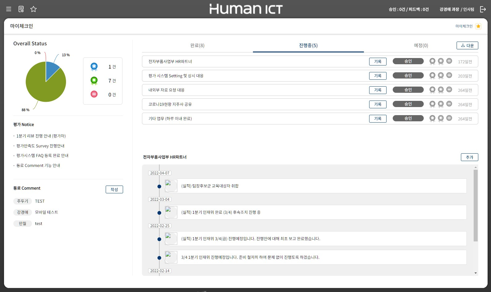

1.사업 추진 배경
1) 기업 경영의 글로벌화가 지속됨에 따라 클라우드 기반의 경영관리시스템에 대한 요구가 높아지고 있으며, 상시 성과관리 시스템은 동료 평가 특성상 근무 장소 이외의 다양한 환경에서 시스템을 사용하고자 하는 수요가 높음.
2) 중소기업도 상시 성과관리 시스템을 도입하고자 하는 잠재 수요가 매우 높지만,구축형 솔루션 도입 비용 부담으로 도입을 못하거나 미루고 있는 실정임
3) 상시성과관리 프로세스는 다수의 대기업에서 사용하면서 민간부문의 성공모델로 정립되고 있으며, 이 모델을 공공부문으로 확산하기 위해 공공기관 클라우드 전환정책에 대응할 수 있는 클라우드 솔루션 개발 및 보급이 필요함
상시 성과관리 시스템 바로가기
